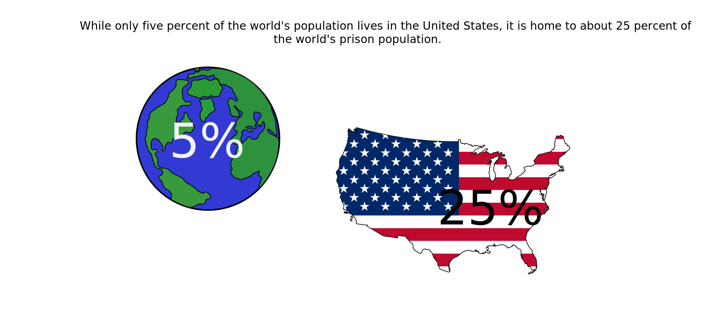

By Emily MacMullen
It has been understood by many that releasing those who have been incarcerated to the streets with little to no job training, education, or even money could result in recidivisim or re-incarceration.
People who are released from prison return to society with a very small chance of finding employment.
However, there is hardly any conversation about the role that poverty and overall opportunity can play when it comes to how one ends up incarcerated in the first place. This report provides the incomes of imprisoned men and women prior to incarceration.
The findings in this report show that in 2014, incarcerated people had a median annual income of $19,185 prior to their incarceration, which is about 41% less than non-incarcerated people in the same age group.
Overall, the data provided shows that people in all gender and race groups earned less before their incarceration than non-incarcerated people.
The data above shows that white imprisoned men have the highest median annual income prior to incarceration, while hispanic women have the lowest median annual income. The data below shows that white men also have the highest median annual income among non-incarcerated people, and hispanic women have the lowest annual income as well. However, the gap between non-incarated white men and incarcerated white men is the most dramatic.
Prison Policy Initiative
The Washington Post
Getty Images
Clip Art Images